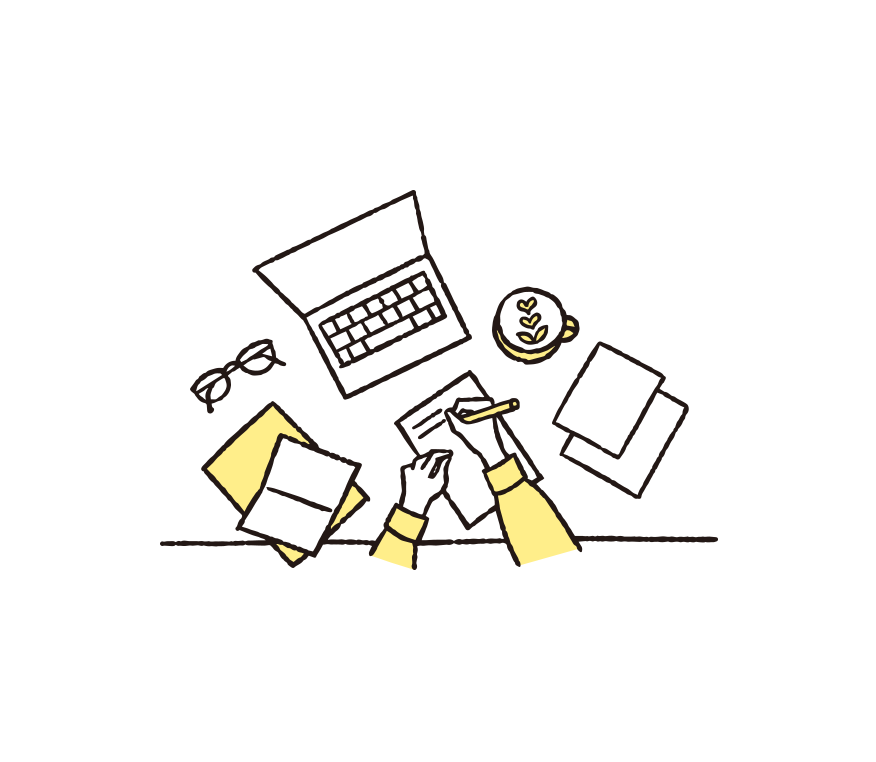
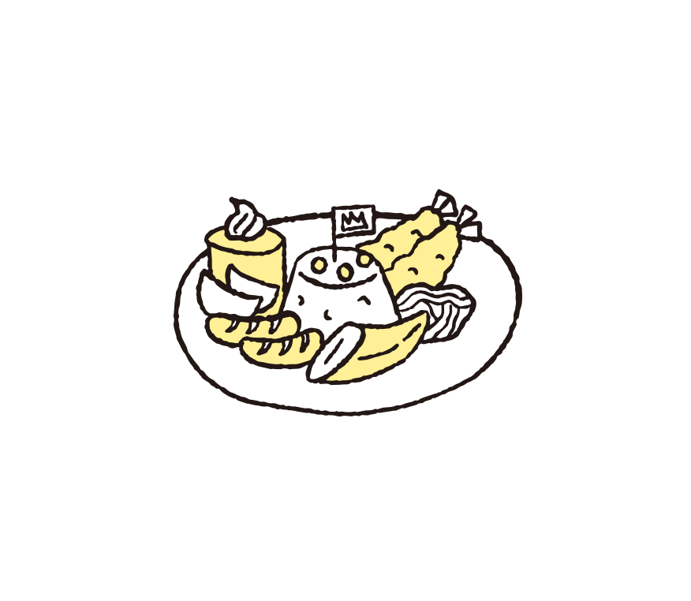
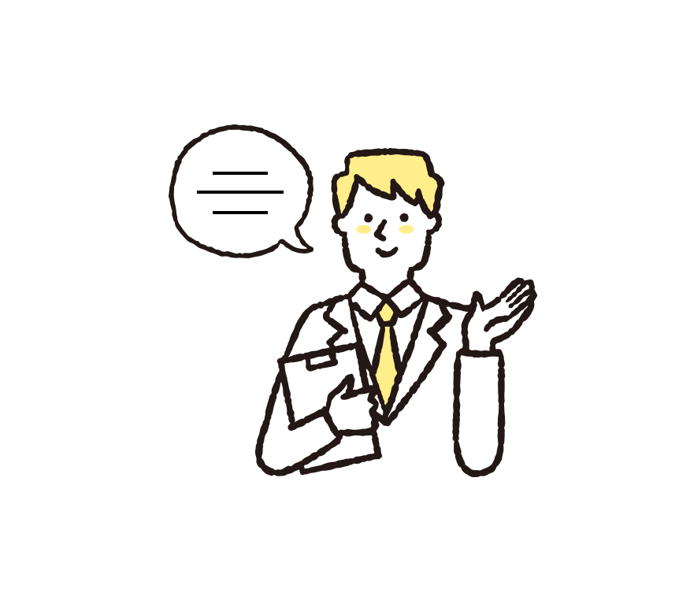
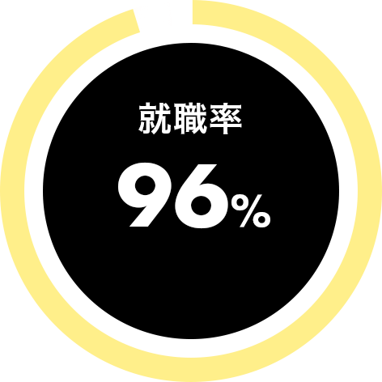
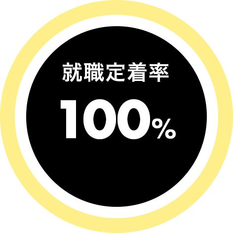
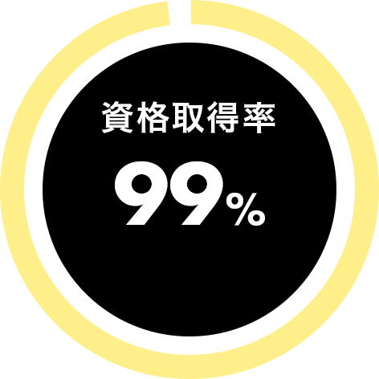
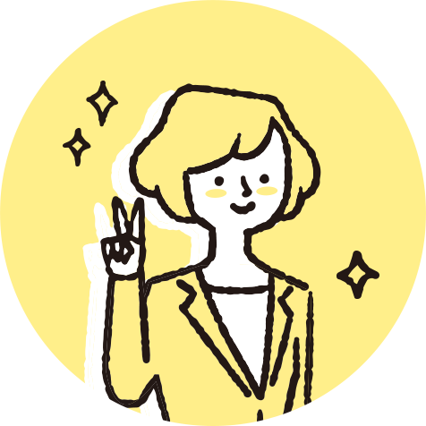
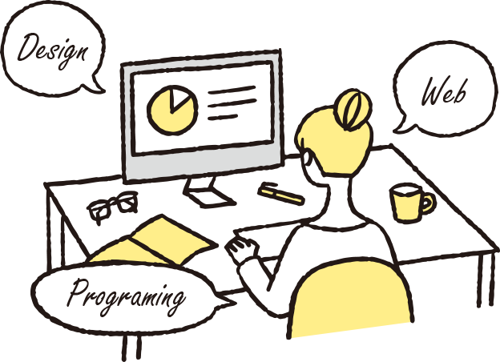

5 Strengths
ドリームマーリンの５つの強み
-
- 01
- pay for certification
- 資格費用全額負担
- 就職や実務で役立つ資格取得費用を全額負担します。資格に関する教材についても、基礎から応用、試験対策まで取り揃えているので、個人のレベルやペースに合わせた学習が可能です。

-
- 02
- lunch for free
- ランチ無料提供
-
バラエティ豊かなメニューのランチを無料で提供しています。栄養バランスが考えられたメニューで集中して訓練に取り組んでいただけます。
※一部例外あり

-
- 03
- training from home
- 在宅利用可能
- 通所が困難な方でも、ご自宅での訓練が行える体制を整えています。訓練や生活についての悩み事を日々オンラインでヒアリングするとともに、定期的にご自宅へ訪問し、訓練全般に関する支援を行っております。
-
- 04
- high employment rat
- 圧倒的な就職実績
- 元人事やキャリアアドバイザーのサポートにより、高い就職率を実現しています。ビジネスマナーの講座や応募書類の添削・模擬面接、面接同席など徹底してフォローしますので、安心して就職準備に取り組んでいただけます

-
- 05
- IT specialist
- IT専門スタッフ
- プログラミングやデザインなどの専門スキルを持った元IT企業出身のスタッフが多数在籍しているため、未経験でも安心して基礎から実践的なスキルの取得が目指せます。
Support Results
ドリームマーリンの支援実績
-

-

-

※2025年6月現在
Employment
Support
就職徹底サポート
-
[01]
面談
ご自身の障がいや特性、現在の状況、職種や勤務地などの就職に関するご希望をお伺いし、一人ひとりに合わせた支援計画を作成します。
-
[02]
訓練
ITに特化した専門的なスキルの学習を中心に、講座やグループディスカッションを通じて、就労に必要なスキルと知識を習得していきます。
-
[03]
実習
訓練では体験できない実務経験の中から、就職に必要なスキルやマナーを学ぶとともに、訓練で培ったスキルを企業にアピールしていきます。
-
[04]
就職

応募書類の添削や模擬面接の実施など就職までサポートします。また、就職後も長く働き続けていただけるよう、定着支援も行っていきます。
Service
サービス事業
-
就労移行支援事業所
一般企業への就職を目指す方を対象に、必要な知識やスキル習得のための支援を受けられます。コミュニケーション・専門スキル・ビジネスマナー・職業に関する知識など就労に関する支援を幅広く受けることができます。
-
A型事業所
障がいや特性によって一般企業での就労が困難な方が、雇用契約を結び就労することができます。実務を通して、一般企業に就職するために必要な知識と能力を習得していきます。
Curriculum
学習内容
実際に取得できる！
検定・資格

Specialist
Expert
Expert
技術者試験
技術者試験
クリエイター
能力認定試験
クリエイター
能力認定試験
クリエイター
能力認定試験
JOB FROM DREAM
Flow to use
ご利用の流れ
お問い合せ
まずは、お気軽にお電話またはメールにてお問い合せください。事業所のことや就労支援サービスなど、ご不明な点や気になることをお聞かせください。見学・面談・体験のご予約も受け付けています。
見学・面談
訓練の内容・事業所の設備などをご案内します。面談では、今までの状況やどのような仕事に就きたいかなどをお伺いいたします。また、安心して利用できるかどうか、実際に訓練を体験することができます。
ご利用手続き
お住まいの市区町村の役所窓口にて、障害福祉利用サービス受給者証の申請を行います。ご希望の場合、スタッフが手続きをサポートしますので、ご安心ください。
契約・利用開始
受給者証が支給されましたら、事業所との契約手続きを行い、ご利用開始となります。 就職に向けて一緒にプログラムに取り組んでいきましょう！
Voice
利用者の声
Contact
お問い合わせ
まずはお気軽に見学・ご相談ください
-
電話でのお問い合わせはこちら
04-7157-3307
受付時間 10:00 -18:00 (平日)
-
メールでのお問い合わせはこちら
お問い合わせフォーム
24時間受付中
News
お知らせ
-
25.6.10
ホームページリニューアル
この度、ドリームマーリンのホームページを大幅にリニューアルいたしました。新しいサイトでは、訓練内容や取得可能な資格、これまでの実績、就職までのステップなどを、より分かりやすく具体的にご紹介しています。見学・体験のご相談もお待ちしております。
-
25.6.10
ドリームマーリン千葉10.1オープン予定
ドリームマーリン千葉駅前校の開校が決定いたしました。2025年10月1日のオープンに向けて準備を進めております。ドリームマーリンは、充実した訓練プログラムと高い就職実績を誇り、多くの方の“働く”を全力でサポートしています。「自分らしい就職を叶えたい」「スキルを身につけたい」――そんな想いを、ぜひ新しい校舎で実現してみませんか？皆さまからのお問い合わせを心よりお待ちしております。
Access
事業所一覧
-
ドリームマーリン
-
- 所在地
- 277-0005
千葉県柏市 柏6-8-40小溝ビル3階B
-
- TEL
- 04-7157-3307
-
- FAX
- 04-7196-7735
-
- 営業時間
- 10:00-18:00（平日）
-
-
ドリームマーリンANNEX
-
- 所在地
- 277-0021
千葉県柏市中央町5-19 1階
-
- TEL
- 04-7196-7316
-
- FAX
- 04-7196-7735
-
- 営業時間
- 10:00-18:00（平日）
-
-
ドリームマーリン
千葉就労支援センター-
- 所在地
- 260-0032
千葉県千葉市中央区登戸1-13-22
シティファイブビルA棟206号
-
- TEL
- 043-216-5905
-
- FAX
- 04-7196-7735
-
- 営業時間
- 10:00-18:00（平日）
-
Profile
会社概要
-
- 運営会社
- 株式会社ドリームブリッジ
-
- 役員
- 代表取締役 大屋隆之
専務取締役 岸岡直哉
-
- 指定認可日
- 就労移行支援型：2023 年7月1日 認可（事業所番号：1212102626）
-
- 事業内容
- 障害者総合支援法に基づく障がい福祉サービス事業
-
- 事業所住所
- 277-0005 千葉県柏市 柏6-8-40 小溝ビル3階B
-
- 電話番号 / FAX
- 04-7157-3307 / 04-7196-7735